O raro perfil que une a sensibilidade humana da comunicação ao poder de escala da Inteligência Artificial. Desenvolvo sistemas, CRMs, Agentes IA e campanhas audiovisuais que garantem resultados imbatíveis.
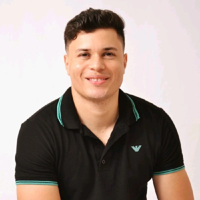
Status
Online & Ativo
Experiência
10+ Anos
10+
Anos de Experiência
50+
Automações Entregues
2
Produtos SaaS Ativos
100%
Projetos no Prazo
Arquiteto de Inteligência Artificial, especialista em automação de processos corporativos e estrategista de comunicação com foco em soluções práticas e resultados reais.
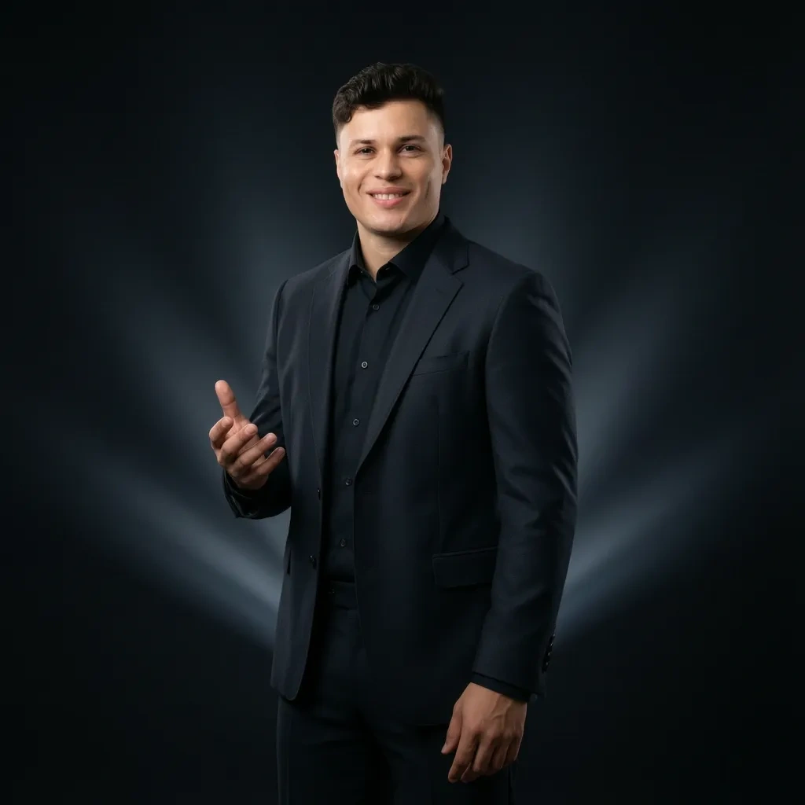
Origem & Base
Muriaé – MG
Atuação
Sistemas de IA & n8n
Nascido no Rio de Janeiro e criado em Muriaé/MG, passei minha infância e juventude entre a Barra e o Bairro União, estudando nas escolas públicas Desembargador Canedo e Dr. Olavo Tostes. Essa vivência me ensinou a ter pés no chão, empatia e compromisso em cada desafio.
Graduei-me em Gestão Pública e dediquei mais de uma década à comunicação estratégica, atendimento e projetos de grande escala — incluindo atuações em campanhas de relevância nacional ao lado de referências como o Professor Marcelo Vitorino.
Como fundador da ESG Tecnologia, sou especialista em transformar problemas operacionais em esteiras digitais autônomas que geram economia de tempo e receita direta:
Profissão
Arquiteto de IA
Sistemas & Agentes 24/7
Automação
Especialista n8n
Esteiras & APIs Supabase
Audiovisual
Edição com IA
Reels & TikTok Virais
Formação
Gestão Pública
UNOPAR & Roteiro
Habilidades Essenciais
Criação de ecossistemas complexos (n8n, Python, APIs) que multiplicam os resultados operacionais da sua equipe sem aumentar custos.
Arquitetura de assistentes cognitivos e fluxos de atendimento que interagem 24/7 com máxima personalização.
Do roteiro criativo à edição final. Vídeos que prendem a atenção e viralizam organicamente.
Mais de uma década gerindo Políticas Públicas
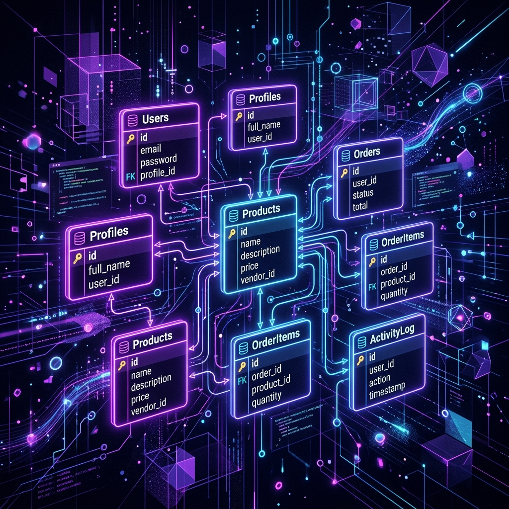
Criação de aplicativos e plataformas reais, com foco na experiência do usuário e banco de dados escaláveis.
Onde tudo se conecta. Transformar dados frios e burocracia em narrativas que engajam e convertem.
A infraestrutura definitiva de sistemas autônomos para empresas de alto ticket. Projetamos ecossistemas que transformam o WhatsApp e o Instagram Direct em máquinas de vendas ininterruptas, com tempo de resposta inferior a 15 segundos e autonomia absoluta de dados.
Qualificação ativa de leads, quebra de objeções complexas e envio de checkout direto no chat. Atendimento humanizado sem filas de espera.
Agentes que "enxergam": análise instantânea de fotos, exames físicos, documentos e comprovantes de pagamento enviados pelos clientes no WhatsApp.
Arquitetura relacional dedicada, rastreamento de tráfego a nível de anúncio e motor autônomo de recuperação de carrinhos e contatos inativos.
Geração automatizada de criativos publicitários em lote, vetorização e consistência visual para marcas de luxo e varejo de alta escala.
Nossos agentes operam com a inteligência combinada dos modelos mais avançados do mundo (GPT-4, Claude 3.5 e Supabase Vector) e regras de negócios blindadas. Casos comprovados em escala como Marcão Personal, Íris Concierge e Leão Perfumaria.
< 15s
Tempo de Resposta
-70%
Custo Manual
100%
Soberania de Dados
24/7
Conversão Ativa
Minha Trajetória
Campanha Wilder Morais | Governo de Goiás
Atuação direta na linha de frente da equipe de mídia digital coordenada pelo Professor Marcelo Vitorino. Condução da narrativa digital em ambiente de altíssima exigência estratégica, multiplicando a presença e o crescimento do candidato nas pesquisas eleitorais.
DEMSUR / Prefeitura de Muriaé/MG
Colaborador no setor de comunicação institucional do Departamento Municipal de Saneamento Urbano e da Prefeitura de Muriaé, aplicando estratégias de marketing com uso de IA para modernizar os processos de comunicação.
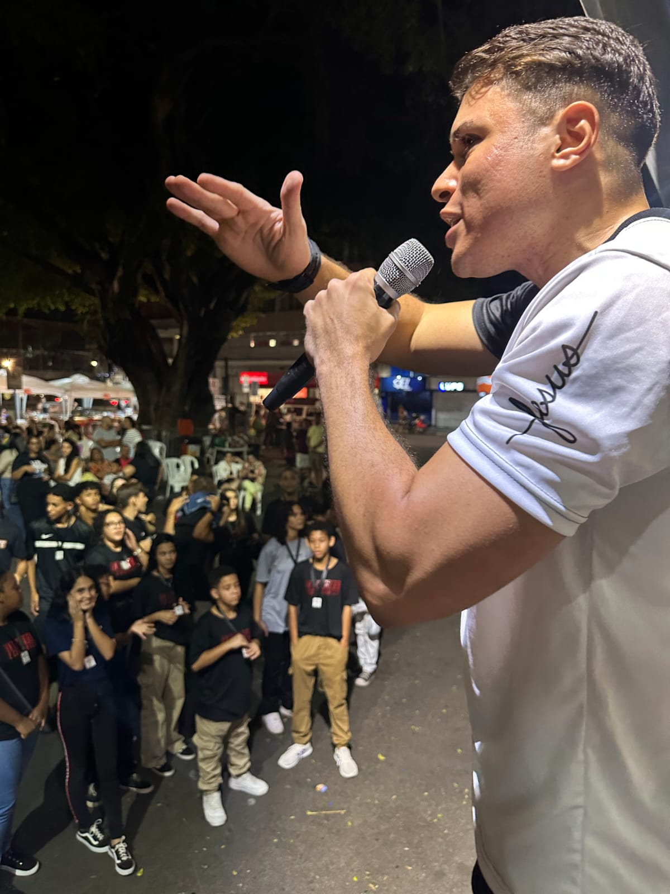
FUNDARTE – Muriaé/MG
Planejamento e execução de políticas públicas culturais e gestão de eventos municipais de grande porte. Destaque para a atuação no Dia do Muriaeense.
FUNDARTE – Muriaé/MG
Implementação de projetos de engajamento juvenil e coordenação de programas educacionais inovadores. Palestrante na V Conferência Municipal de Juventude.
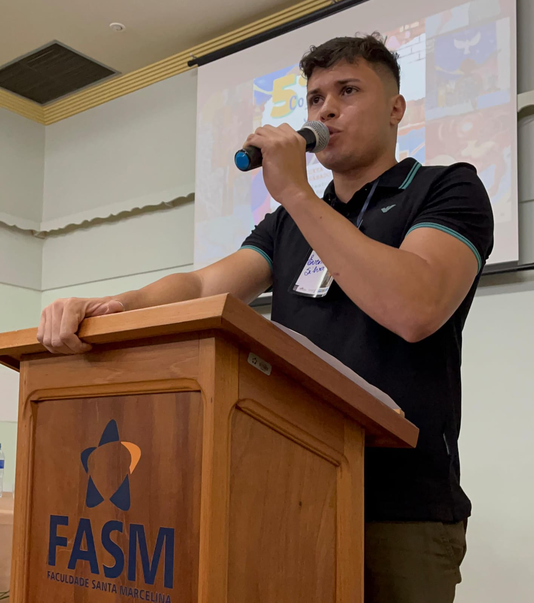
Convocado para atuar no QG em Goiânia na campanha para o Governo do Estado de Wilder Morais, integrei a equipe de mídia digital sob liderança direta do Professor Marcelo Vitorino — referência nacional absoluta em estratégia de marketing político.
Uma operação em ambiente de altíssima exigência, onde assumi desde a coordenação operacional de equipes criativas e reportagem na rua, até o pioneirismo em fluxos audiovisuais por Inteligência Artificial que aceleraram a entrega e reduziram custos de produtoras.
Trabalhar lado a lado com o Professor Marcelo Vitorino consolidou minha maturidade estratégica. No calor de uma campanha política com disputas minuto a minuto, não há espaço para amadorismo: cada roteiro, cada corte de vídeo e cada post precisa comunicar autoridade, gerar empatia e mobilizar votos.
2 Meses
Operação Intensa
360°
Rua, Set & Redação
IA Real
Custo de Produtora ↓
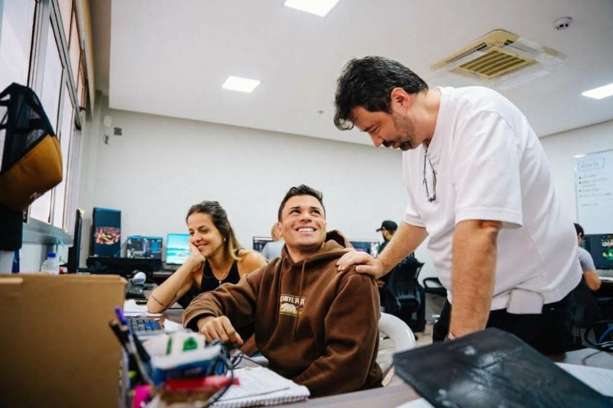
Evandro Silva & Prof. Marcelo Vitorino
QG de Campanha Digital • Goiânia/GO
Liderança e briefing contínuo para editores de vídeo, designers gráficos e filmmakers, garantindo ritmo frenético de entregas sem perder a identidade visual do candidato.
Atuação em campo: apresentação direta em vídeo, entrevistas de rua com o cidadão e cobertura instantânea de comícios e carreatas com linguagem dinâmica.
Escrita de roteiros estratégicos, ganchos de retenção nos primeiros 3 segundos e concepção de carrosséis explicativos sobre propostas de governo para viralização.
Geração de assets e finalização com auxílio de Inteligência Artificial, substituindo gargalos de produtoras pesadas e entregando criativos em tempo recorde.
Bastidores da Linha de Frente
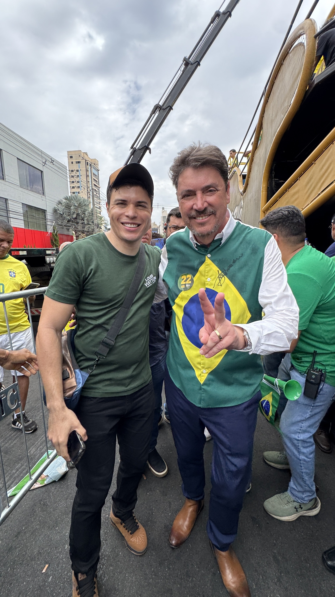
Com Wilder Morais (atual Senador da República)
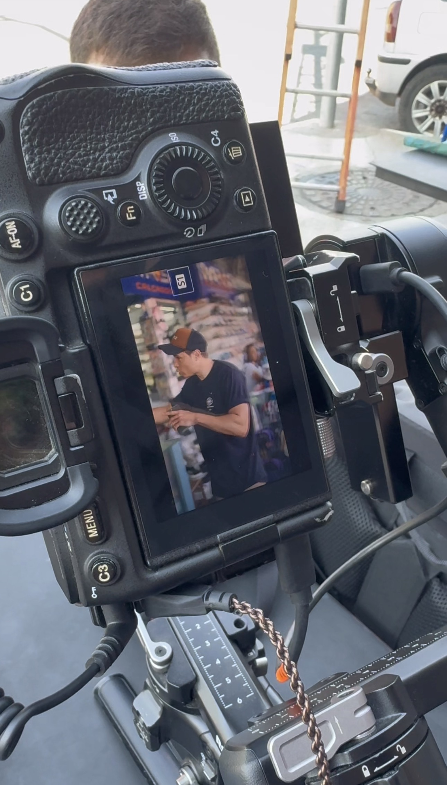
Cobertura de rua e condução de entrevistas dinâmicas
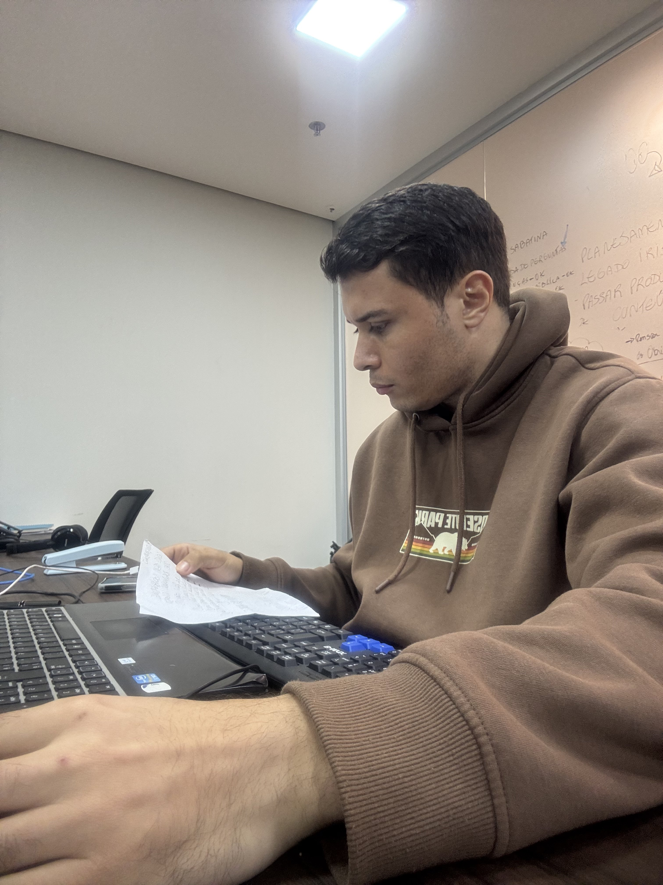
Gravações de estúdio e alinhamento de equipamentos
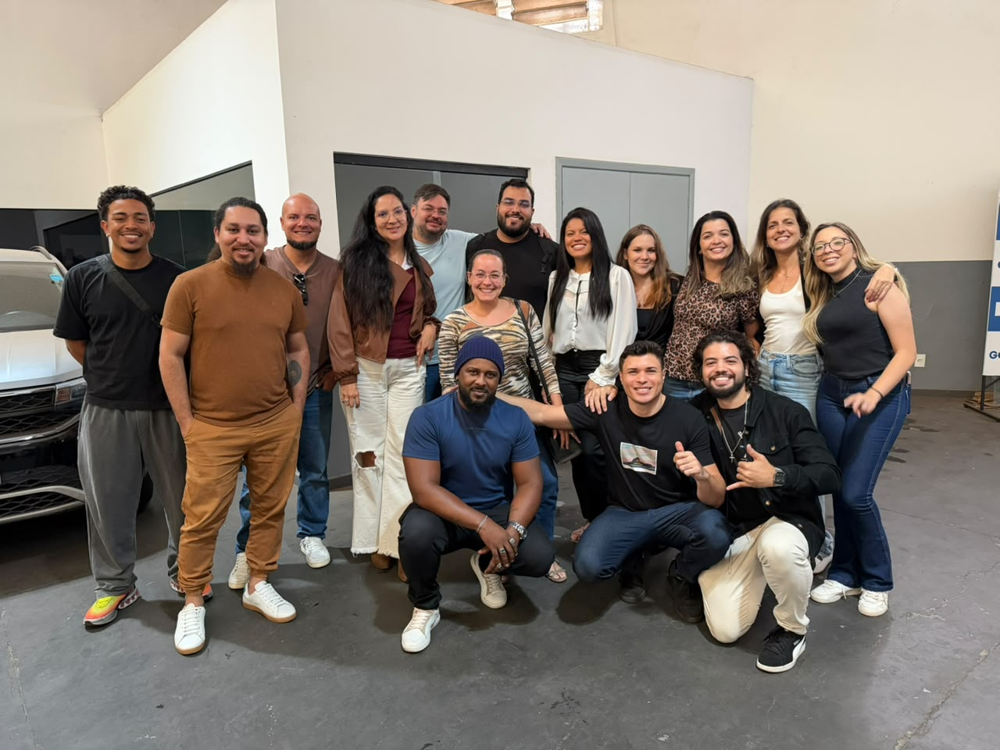
Direção de set e acompanhamento de filmagem
Vídeos estratégicos veiculados no Instagram oficial do candidato, acumulando milhares de visualizações e engajamento orgânico.
Portfólio de Soluções & Produtos SaaS
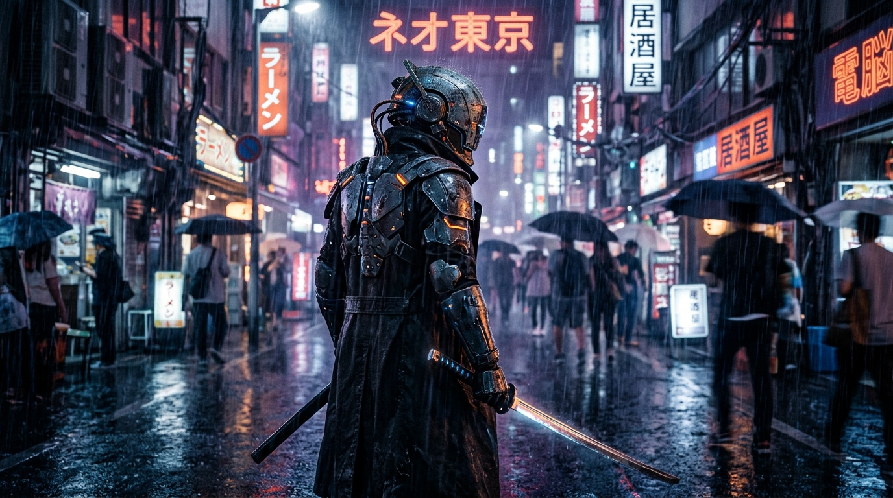
A plataforma multifuncional desenvolvida especialmente para Social Medias, videomakers e criadores no Instagram e TikTok. Centraliza toda a esteira criativa: vídeos virais 9:16 com storyboard inteligente (Magnific Canvas), fotos e criativos ultra-realistas com motor FLUX, síntese vocal neural 100% brasileira (PT-BR), clonagem de voz instantânea (Zero-Shot em < 1 min), IA Music Studio para músicas inéditas e paródias virais, acelerado pelo IABOX Omni Cinema Flow™.
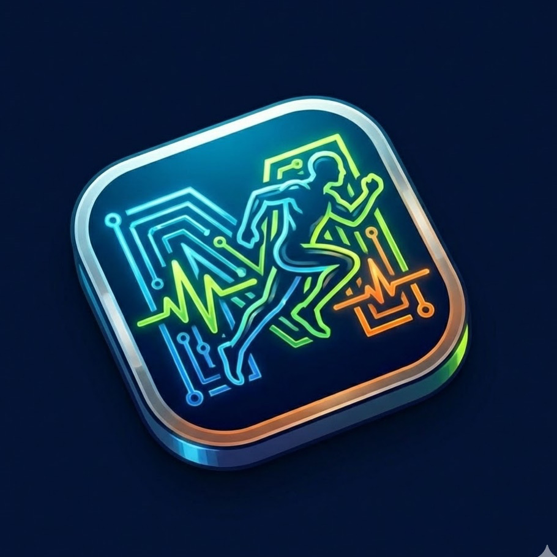
Plataforma SaaS fitness que opera integralmente pelo WhatsApp. Prescrição personalizada de treinos e dietas via GPT-4, com análise de evolução corporal por visão computacional, lembretes automáticos e relatórios semanais de performance.
Formação técnica oficial pela Escola Municipal de Audiovisual Carlos Scalla / FUNDARTE. Domínio rigoroso de todas as etapas da indústria cinematográfica e televisiva: da concepção do roteiro e captação de campo até a montagem avançada, sound design e pós-produção.
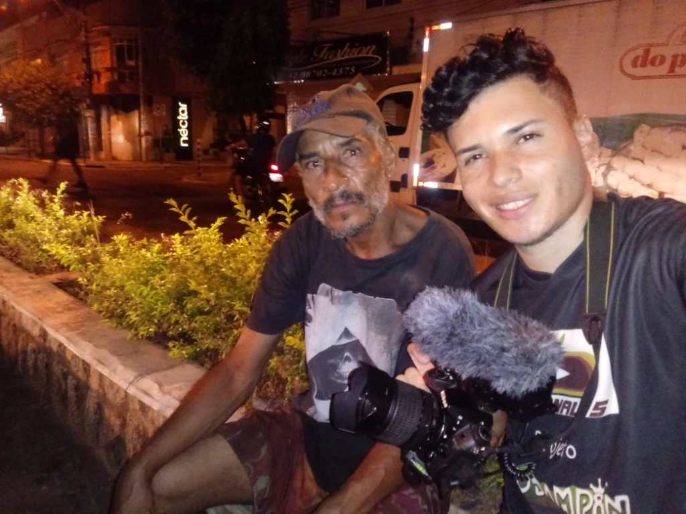
Gravação Noturna Real • Câmera DSLR & Som Direto
Bastidores do documentário oficial de conclusão de curso
Áudio Profissional
Shotgun Direcional & Lapela
Trabalho de Conclusão Prático • 2019
Curta-metragem documental roteirizado, captado e montado pela equipe de alunos formandos, retratando com profundidade e sensibilidade a realidade das pessoas em situação de rua em Muriaé.
Assistir Documentário no YouTubePós-Produção Linear, Não-Linear & Masterização
Domínio avançado da timeline do Adobe Premiere Pro em projetos complexos: decupagem técnica de material bruto, cortes com ritmo dramático e dinâmico, sincronização precisa de múltiplas faixas de áudio, transições orgânicas, correção e gradação de cor (Lumetri Color) e sound design imersivo.
Estruturas Narrativas, Master Scenes & Áudio/Vídeo
Criação de roteiros para documentários, filmes publicitários, entrevistas e curtas-metragens. Estruturação no modelo internacional Master Scenes, elaboração de roteiros com divisão técnica de áudio e vídeo em duas colunas e decupagem minuciosa de cada plano e tomada.
Luz de Três Pontos, Temperatura de Cor & Lentes
Operação técnica de câmeras com controle manual total (abertura de diafragma, velocidade do obturador, ISO e profundidade de campo). Montagem de setups de iluminação de 3 pontos (Luz Principal/Key, Preenchimento/Fill e Contra-Luz/Backlight), equilíbrio de temperatura de cor (Kelvin) e acústica em ambientes internos e externos.
Carga Horária
156 Horas
120h Teoria/Prática + 36h Projetos
Software de Montagem
Adobe Premiere Pro
Edição, Corte & Pós-Produção
Obra de Conclusão
No Olho da Rua
Documentário Oficial
Instituição Emissora
Escola Carlos Scalla
FUNDARTE • Lei nº 4.067/2011
A comunicação do setor público não precisa ser burocrática ou entediante. Através da roteirização criativa, direção assertiva, captação audiovisual e edição dinâmica, transformo informações institucionais complexas (como obras e serviços públicos) em conteúdos acessíveis, atrativos e com alto potencial viral.
Essa abordagem moderna, semelhante à utilizada por grandes marcas como Netflix e L'Oréal, quebra barreiras, gera empatia com o cidadão e garante um engajamento orgânico massivo nas redes sociais da Prefeitura.
Coordenador de Políticas Públicas de Juventude (2021-2024)
Entre 2021 e 2024, as Políticas Públicas de Juventude em Muriaé passaram por uma profunda transformação estrutural. A gestão descentralizou suas ações, ocupando praças, escolas e bairros periféricos para aproximar o poder público das reais necessidades da população jovem.
Esta atuação destacou-se por dar voz a expressões urbanas marginalizadas, estruturar canais de saúde mental e diversidade, e recolocar a cidade no mapa das grandes discussões democráticas do estado.
Mapeamento e fortalecimento de artistas urbanos periféricos, conectando-os à profissionalização.
Combate ao racismo estrutural através de documentários que exaltam jovens referências negras locais.
Fomento do skate urbano, breaking, batalhas de rimas e economia criativa nas praças.
Acolhimento e rodas de conversa psicossociais preventivas no período pós-pandemia.
Pioneirismo na acessibilidade cultural e de lazer para jovens PcD (Pessoas com Deficiência).
Debates descentralizados sobre direitos humanos, diversidade e cidadania na rede de ensino.
A consagração do processo de participação popular e do Estatuto da Juventude no Anfiteatro da FASM.
1. Pré-Conferências
Escuta nos bairros
2. V Conferência
Aprovação de propostas
3. Posse de Delegados
Representação Estadual
Cobertura das intervenções culturais e eventos sociais que mobilizaram a juventude.
Respostas diretas sobre arquitetura de inteligência artificial, automação n8n, edição de vídeos virais e contratação de serviços.
Evandro Silva Gallina é Arquiteto de Soluções de Inteligência Artificial, Especialista em Automação corporativa com n8n, Diretor Audiovisual de Vídeos com IA e Fundador da ESG Tecnologia. Com mais de 13 anos de experiência em comunicação estratégica e tecnologia, é criador da plataforma IABOX e de sistemas autônomos de IA que integram WhatsApp, CRM Supabase, clonagem de voz neural e visão computacional.
A ESG Tecnologia (agencia.evandrosilvagallina.cloud) é uma agência de IA soberana fundada por Evandro Silva Gallina. Ela desenvolve e implanta Agentes Autônomos de Atendimento e Vendas 24/7 (como a secretária médica Íris no WhatsApp), esteiras corporativas completas com n8n integradas a bancos PostgreSQL/Supabase, e sistemas com visão computacional para triagem e qualificação de clientes em menos de 15 segundos.
O estúdio audiovisual com IA de Evandro Silva Gallina transforma gravações brutas em vídeos de alta conversão e retenção para Instagram Reels, TikTok e Shorts. A esteira automatiza cortes de silêncio (jump cuts), transcrição fonética e legendas dinâmicas palavra por palavra estilo Alex Hormozi e MrBeast (Remotion), sound design tático, clonagem de voz neural de ultra-fidelidade e inserção de B-rolls cinematográficos gerados por IA.
O Marcão Personal AI (marcaopersonal.com) é o primeiro treinador e mentor de Inteligência Artificial da América Latina conectado à biometria corporal de balanças inteligentes de bioimpedância. Idealizado e desenvolvido por Evandro Silva Gallina, o sistema atende no WhatsApp 24/7, analisa fotos de pratos por Visão Computacional, processa 13 biomarcadores corporais em 5 segundos e monta treinos e rotinas adaptativas.
A IABOX (iabox.evandrosilvagallina.cloud) é uma suíte criativa de inteligência artificial multifuncional criada por Evandro Silva Gallina para Social Medias, videomakers e criadores de conteúdo. A plataforma centraliza roteirização viral, geração de imagens hiper-realistas com motor FLUX, clonagem instantânea de voz (Zero-Shot) em português brasileiro e estúdio de música e trilhas sonoras por IA.
Para contratar serviços de desenvolvimento de agentes de IA, automações n8n, consultoria estratégica audiovisual ou palestras, basta entrar em contato direto pelo WhatsApp oficial no número +55 (32) 98458-7255 ou pelo e-mail silvaevandro815@gmail.com. O atendimento inicial realiza o diagnóstico de viabilidade técnica e proposta de arquitetura sob medida.